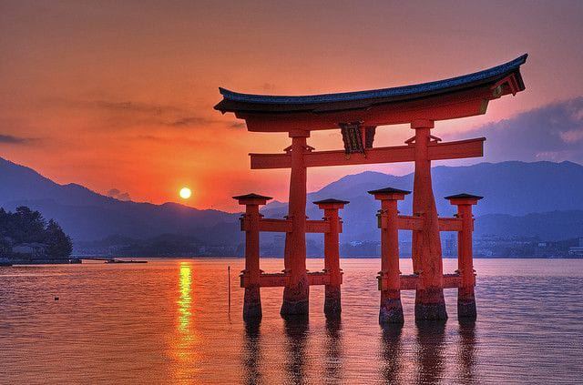

Kuil Itsukushima

Kuil Itsukushima adalah kuil Shinto yang terletak di Pulau Itsukushima, Hatsukaichi, Prefektur Hiroshima, Jepang. Kuil ini adalah salah satu Situs Warisan Dunia UNESCO dan merupakan salah satu daya tarik wisata paling populer di Jepang.
Kuil Itsukushima telah ada sejak abad ke-6, tetapi bangunan kuil yang ada saat ini dibangun pada abad ke-12. Kuil ini didedikasikan untuk dewi-dewi laut dan laut, dan merupakan tempat ziarah penting bagi umat Shinto.
ciri khas Kuil Itsukushima adalah Torii-nya yang besar, yang menjulang di atas air. Torii ini adalah gerbang masuk ke kuil, dan merupakan salah satu simbol paling ikonik di Jepang.